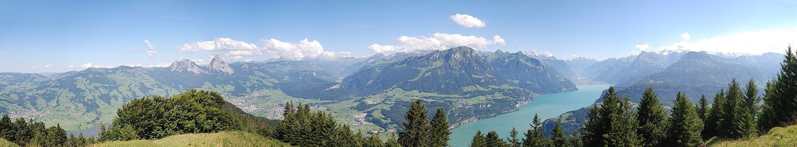
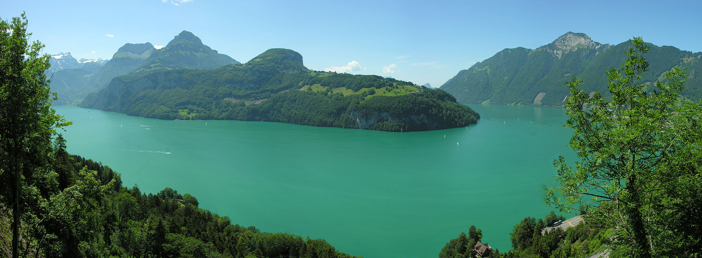
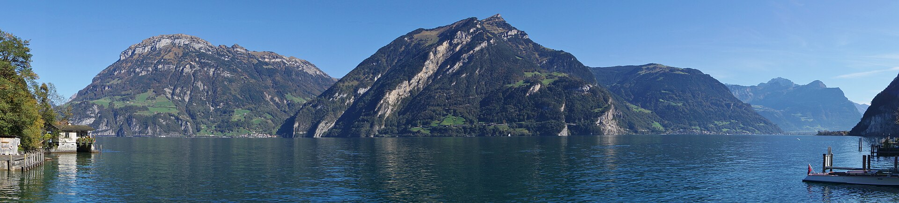
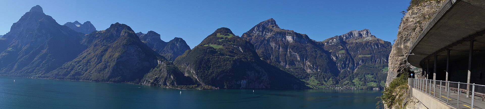
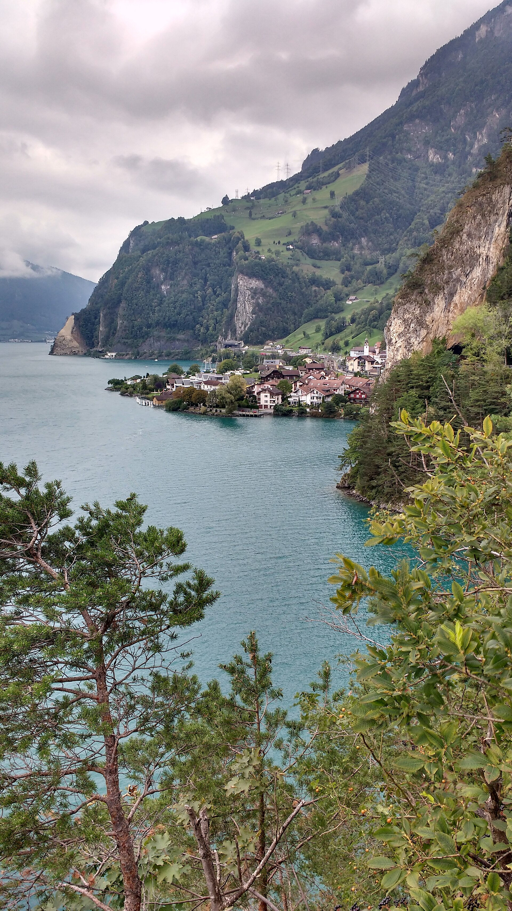
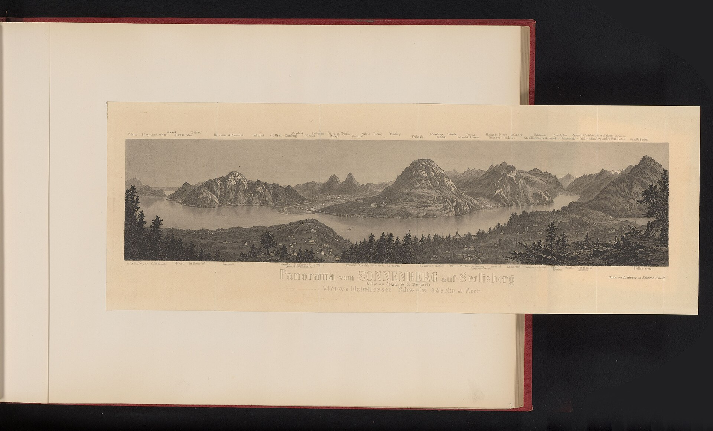

For the boat-at-sea-with-mountain-background scene. Lake Uri is the southern arm of Vierwaldstättersee, just north of Altdorf (port = Flüelen). Steep alpine cliffs rise straight from the water on both sides.

urnersee-panorama.jpg — Wide panorama of Lake Uri

urnersee-2007.jpg — Lake with cliffs, summer 2007

bauen-pano.jpg — From Bauen looking east across the lake

axen-pano.jpg — From Axen looking west, dramatic cliffs

sisikon-from-south.jpg — Lake near Sisikon (close to Tellsplatte)

panorama-rijks.jpg — Historic Rijksmuseum print of Urnersee + surrounding villages